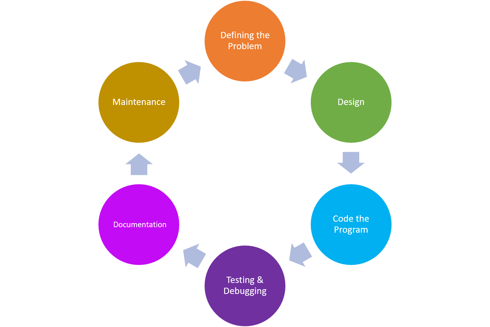

Define The Problem
- This step involves gatheringthe requirements of the program needed to solve the problem.
- Questions that should be answer:
- What data do we need to process?
- How should we process the data?
- What outout should the program deliver
- How should the user interface look?
Design The Problem
- This step involves gathering the requirements of the programm needed to the solve the problem
- Commonly used tool:
- structure charts
- Algorithm
- Flow Charts
- Decision
- Pseduocode
Code The Problem
- Once the program has been designed, a developer then writes the code>
- Coding often involves translating the design from the charts and pseduocode into a specific programming languague.Ususally the languague is chosen during the "defining" stage.
Testing And Debugging
- After code has been written this stage revolves around fixing any buds in the program
- There are two kinds of errors that cause bugs.
- Synatx errors: These are like grammical mistakes in the code.
- Logical error: These mistake might causean ither than intended output but the code still workd.
- The programmer must fix these mistakes by carefully examing the already written code error.
Documentation
- After coding has been completed, the programmar must write a manual that generally contains the following:
- An overview of the programm functionality
- In-depth explanations of the programm features.
- Documentations of all the commands
- A thought descritption of error messages generated by the program.
Deploying and Maintaining the Program
- A software team will be responsible for fixing errors and updating the software with new features.
- When a new feature should be added to the program, the cycle restarts as developer begin to define what problem the new feature will solve.